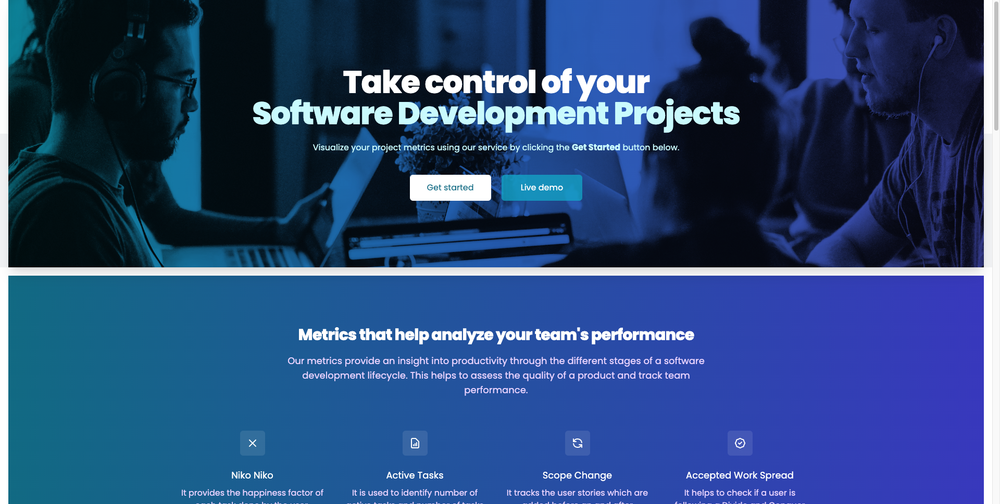
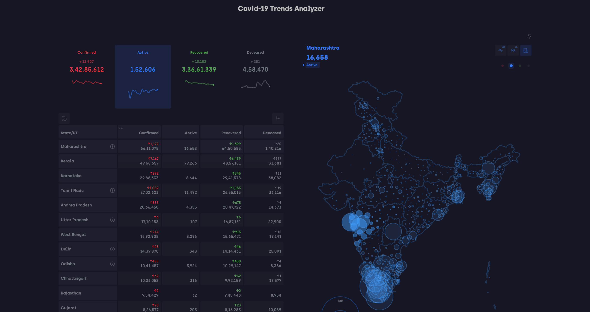

Front-end Developer UI/UX Designer Backend Developer Full Stack Developer
More About MeHello! I'm a dedicated software developer with a master's degree in Computer Software Engineering. I have a passion for creating elegant and efficient solutions to complex problems. With a strong foundation in programming languages and experience in mobile app development and UI design, I'm always eager to take on new challenges.
Tech enthusiast | Thrives on tackling new challenges with enthusiasm | Finds joy in sports, reading, and photography.
My technical skills include proficiency in programming languages such as C, Python, HTML, CSS, JavaScript, jQuery, and TypeScript. I am also experienced in working with popular web technologies and frameworks such as React.js, Next.js, Node.js, Express.js, and Flask. In addition, I have knowledge of databases like MongoDB and Postgresql, and I am proficient in version control using Git. Furthermore, I have hands-on experience with containerization using Docker and cloud platforms such as AWS.
Let's delve into my educational and professional journey, where I have gained valuable expertise as a software developer. Let's explore the highlights of my education and work history to uncover the depth of my knowledge and experience.
Jan 2023 - May 2023
May 2020 - Dec 2020
Jan 2022 - Present
During my Master's program in Computer Software Engineering, I had the opportunity to dive deep into advanced concepts and cutting-edge technologies. Through coursework focused on software engineering foundations, agility, security, and semantic web engineering, I gained a comprehensive understanding of industry best practices. Collaborating with talented peers and professors, I worked on challenging projects that enhanced my problem-solving abilities and refined my software development skills.
Jul 2017 - Aug 2021
In my Bachelor's degree in Electrical and Communication Engineering, I built a strong technical foundation. Courses in operating systems, computer networks, object-oriented programming, and data structures sharpened my logical thinking and programming skills. Through hands-on projects and internships, I gained practical experience in developing single-page web applications and working with technologies like MongoDB, React.js/Redux, Express, and Node.js. These experiences taught me the importance of teamwork and effective communication in delivering successful projects.
Step into the project highlight reel of my portfolio! Here, you'll discover a selection of my standout projects that showcase my skills as a software developer. From web applications to mobile platforms, each project represents my creativity, problem-solving abilities, and commitment to delivering exceptional software experiences. Join me as we explore the exciting world of my projects and witness the magic of turning ideas into reality. Let's dive in and be inspired by the possibilities!


If you have any inquiries, collaboration opportunities, or simply want to connect, please feel free to reach out. I'm eager to engage in meaningful conversations and explore potential collaborations. Enter your details below and I'll get back to you as soon as possible.
1215 E Vista Del Cerro Drive
Tempe, AZ
85281 US
varshiksonti@gmail.com
Mobile: (+1) 602-816 5892